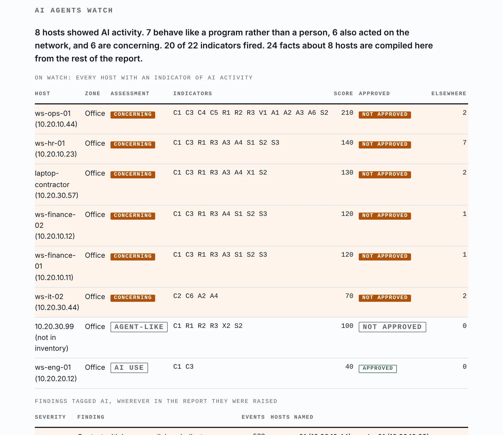

OT and IT deep network visibility
Know what happened on your plant network, and what to do about it.
Historian reads the network history a sensor has collected at your plant and turns it into a report and a list of things to act on.
- 3
- views of one report: leadership, OT owners, the people doing the work
- 22
- indicators of AI agent activity in the catalogue
- 3
- lists to act on: risks, incidents and tasks
- 0
- writes to your plant network
01 It only listens
Nothing is installed on your controllers, and nothing is sent to them.
A capture point at the plant records a copy of the traffic and delivers it to the plant's network sensor. Historian asks the sensor questions with a read-only account. It never writes to the sensor or the network, and it never asks for the passwords it sees crossing the wire, only how many there were.
- One network sensor per plant, each holding that plant's own history
- The sensor is Malcolm, the open-source network traffic analysis suite, and stays a separate system
- No port has to be opened to the internet: sensors and Historian meet on a private network
- Runs on your own server
- Plant network
- Capture point
- Network sensor
- Historian
- Risks, incidents, tasks
02 Can these numbers be trusted?
The report starts by saying how completely the plant could be observed.
A plant that is quiet because its sensor was down must never read as a plant where nothing happened. So every report opens with what the sensors recorded, where the gaps are, and whether the figures below are complete or lower bounds.
- Capture points delivering, and when each last did
- Gaps in the record, listed to the minute
- If the sensor refuses a question, the report still builds and says what is missing

03 Findings, ranked by severity
Each finding comes with why it matters, what to do and the evidence.
A finding is something observed in the window that needs a decision. The worst come first, and each one can be traced to the records behind it.
- Passwords sent in cleartext, contact with known-malicious addresses, devices that are not in the inventory
- Trends against the period before, so you can see whether risk is going up or down
- PDF, Excel and PowerPoint from every page

04 One report, three readers
Leadership and OT owners ask different questions. Each gets its own view.
The executive summary answers in a page. The OT owner view goes down to the controller. The full report carries the evidence for whoever does the work.
Questions for leadership
- Is risk going up or down?
- Do we know what is on our network?
- Are the network zones separated?
- Do plant devices talk to the internet?
- Who has remote access into the plant?
- Were known attackers seen?
- Was malware moved over the network?
- What attacker behaviour was observed, in MITRE ATT&CK terms?
Questions for OT owners
- Who sent commands to controllers?
- Who talks to each controller?
- What changed since the period before?
- Are the controllers communicating cleanly?
- Which industrial protocols are on the network?
- What is known about each plant device?
- Which weak or legacy practices are in use?
- Which software and versions were seen?

05 AI agents on the network
See which machines behave like a program and not like a person.
AI agents are arriving on office and plant networks, approved or not. Historian compiles every host that shows an indicator of AI activity, what each one did on the network, and whether it is on your approved list.
- A catalogue of indicators, and which of them each host showed
- Hosts that also acted on the network are marked as concerning
- Groups of hosts working in step

06 Conclusions
The report ends in three lists somebody can act on.
Risks go to a register, incidents to a SOC, tasks to a queue. Every rating carries the rule that produced it, because these are first readings from one window of traffic and the page says so.
- Send the three lists to a SpaceRisk register with one button. Nothing is sent until it is pressed
- Sending again updates what was sent before and never makes a second copy
- Exports for a SIEM (OCSF) and for Jira, ServiceNow or a mailbox, plus Excel and PowerPoint
For the risk register
Risks
A standing weakness, rated likelihood times consequence, each from 1 to 5, and given to an owner.
For the SOC
Incidents
Something that has happened and needs responding to now.
For a queue
Tasks
One piece of work with a queue, a due date and a way to tell when it is finished.

07 Every plant at once
Rank your plants by what needs deciding.
With more than one plant you get them side by side: which needs attention first, what is true at several of them against what is true at one, and which could not be monitored completely.
- Each row opens that plant's own report
- Findings shared by several plants are shown together
- Unwatched is never shown as quiet

See Historian read your own network.
Tell us about your plants and we will show you the report on simulated data first, then on yours.